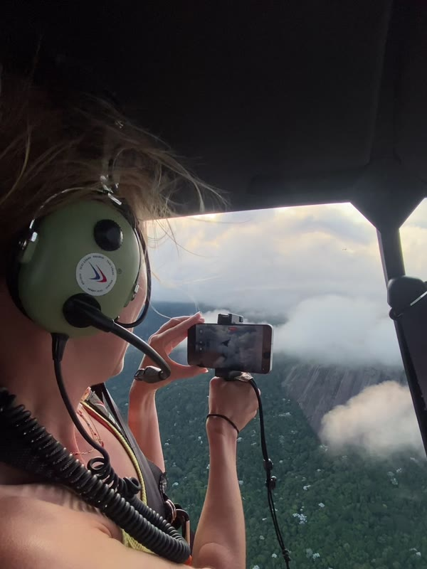
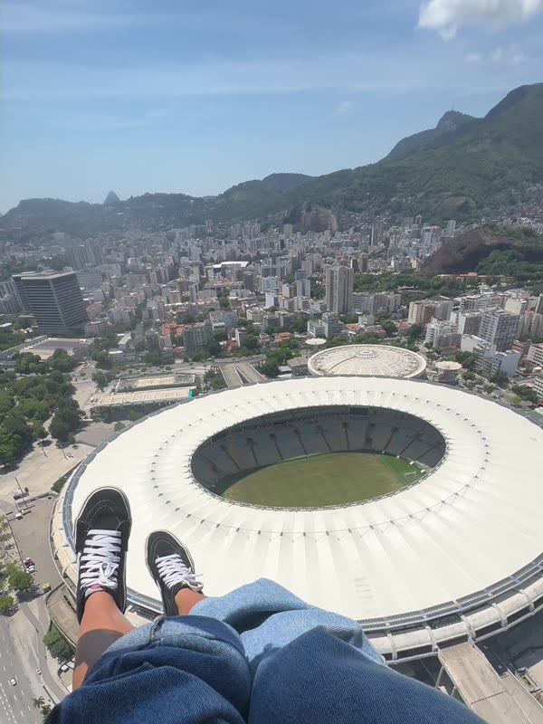

EXPERIÊNCIA RIO IA
O Rio visto do céu
de helicóptero
O Cristo, o Pão de Açúcar, Copacabana e Ipanema lá de cima. Um voo privativo só para vocês, para lembrar a vida toda.
Doors OffVoo privativo15 a 60 minAté 5 pessoas
A PARTIR DER$ 1.490
por voo de 15 minutos, para 2 ou 3 pessoas (não é por pessoa).
Preços válidos até 15 de janeiro de 2027.
A experiência que recomendamos
O mais emocionante que dá para fazer no Rio.
★ RECOMENDADO RIO IA
Doors Off · com as portas abertasaté 3 pessoas
30 minutos · Cristo e Pão de Açúcar
R$ 1.197 por pessoa com o grupo completoR$ 3.590
R$ 1.197 por pessoa com o grupo completoR$ 3.590
40 minutos · + Maracanã e Centro
R$ 1.597 por pessoa com o grupo completoR$ 4.790
R$ 1.597 por pessoa com o grupo completoR$ 4.790
Para quem quer adrenalina: você voa sentado com as pernas para fora, preso com cinto e arnês, com a cidade aos seus pés. As melhores fotos do Rio.
Voos com portas fechadas
Preço por voo, para o grupo todo.
15 minutos
Barra, Joá e Pedra da Gávea, ou as praias selvagens de Grumari até a Marambaia.
2-3 pessoas
R$ 497 por pessoa com o grupo completoR$ 1.490
R$ 497 por pessoa com o grupo completoR$ 1.490
20 minutos
Praias da Barra, Pedra da Gávea, Leblon e o Cristo Redentor.
2-3 pessoas
R$ 863 por pessoa com o grupo completoR$ 2.590
R$ 863 por pessoa com o grupo completoR$ 2.590
4 pessoas
R$ 872 por pessoa com o grupo completoR$ 3.490
R$ 872 por pessoa com o grupo completoR$ 3.490
★ RECOMENDADO RIO IA
30 minutos
Pedra da Gávea, Ipanema, Copacabana, Pão de Açúcar e o Cristo Redentor.
2-3 pessoas
R$ 997 por pessoa com o grupo completoR$ 2.990
R$ 997 por pessoa com o grupo completoR$ 2.990
4 pessoas
R$ 972 por pessoa com o grupo completoR$ 3.890
R$ 972 por pessoa com o grupo completoR$ 3.890
5 pessoas
R$ 1.078 por pessoa com o grupo completoR$ 5.390
R$ 1.078 por pessoa com o grupo completoR$ 5.390
45 minutos
Tudo isso + Santos Dumont, Museu do Amanhã, Sambódromo e Maracanã.
2-3 pessoas
R$ 1.497 por pessoa com o grupo completoR$ 4.490
R$ 1.497 por pessoa com o grupo completoR$ 4.490
4 pessoas
R$ 1.472 por pessoa com o grupo completoR$ 5.890
R$ 1.472 por pessoa com o grupo completoR$ 5.890
5 pessoas
R$ 1.598 por pessoa com o grupo completoR$ 7.990
R$ 1.598 por pessoa com o grupo completoR$ 7.990
60 minutos
O Rio inteiro + a Ponte Rio-Niterói, o MAC de Niemeyer, o Maracanã e o Cristo.
2-3 pessoas
R$ 1.997 por pessoa com o grupo completoR$ 5.990
R$ 1.997 por pessoa com o grupo completoR$ 5.990
4 pessoas
R$ 1.948 por pessoa com o grupo completoR$ 7.790
R$ 1.948 por pessoa com o grupo completoR$ 7.790
5 pessoas
R$ 2.158 por pessoa com o grupo completoR$ 10.790
R$ 2.158 por pessoa com o grupo completoR$ 10.790
Mais de 5 pessoas? Dividimos em 2 voos. Exemplo para 6 pessoas (3 + 3): Doors Off de 30 min = R$ 7.180 (R$ 1.197 por pessoa) · voo clássico de 30 min = R$ 5.980 (R$ 997 por pessoa).
De onde sai? Do heliponto na Barra da Tijuca. O transfer não está incluído: se precisar, a gente cota para você (de Ipanema ou Copacabana são uns 40-60 minutos).

Como é
 Copacabana lá de cima
Copacabana lá de cima Pés para fora
Pés para fora
Fotos únicas
MaracanãO que inclui
- Voo privativo só para o seu grupo, com piloto
- Fones para ouvir e falar durante o voo
- Rota pelos pontos mais bonitos do Rio (mais minutos, mais lugares)
- Coordenação pelo WhatsApp do começo ao fim
Bom saber
- Para reservar precisamos do nome e do peso de cada passageiro
- Por segurança há limite de peso: nos voos de 2-3 pessoas, até 110 kg por pessoa e 260 kg no total
- Doors Off: idade mínima de 12 anos
- Antes de sair, mandamos mensagem para confirmar o tempo e o horário
- O voo depende do tempo: se não der para voar, a gente avisa
- Roupa confortável e óculos de sol; no Doors Off, nada solto nas mãos além do celular preso
- Reserva com antecedência, conforme disponibilidade
Como reservar
Reserva: confirmada com o pagamento de 100% por Pix ou cartão (no cartão +5%).
Data e horário: sujeitos a disponibilidade; reserve com antecedência, principalmente no fim de ano.
Reservar pelo WhatsApp
← Ver todas as experiências
Data e horário: sujeitos a disponibilidade; reserve com antecedência, principalmente no fim de ano.